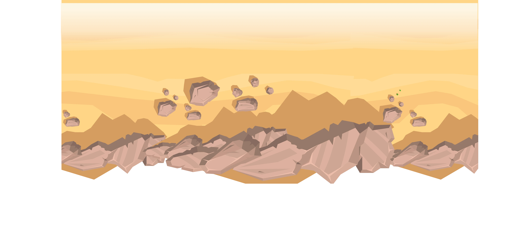

<!doctype html>
<meta charset="utf-8">
<meta name="viewport" content="width=device-width,initial-scale=1">
<title>Highway 19 — section three</title>
<link rel="stylesheet" href="section-fonts.css">
<link rel="stylesheet" href="section-03.css">
<style>body{margin:0;background:#04264f}</style>

<section class="sec3">

  <!-- THE DESERT — 978 low-poly rocks and bushes in his export, and nothing to
       collapse: every path is real geometry, not a gradient faked out of
       slivers. A browser has to draw all of them every time it rasters this
       region, so it is a bitmap: rasterised from HIS OWN file at 4000px by
       tools/rasterise_art.js, which is sharper than native up to a 3250px
       section and 121 KB against 221 KB of SVG. It carries no text and never
       needs to be crisp at any zoom, so nothing is lost.

       The clip takes 14.3 units off the top. His gold sand base starts at
       y 9.2 and the cream gradient over it only starts at 23.51, so the layer
       opens with a gold band - a hard line right where section two's sand
       ends. The section paints his cream underneath, so clipping it off
       leaves cream meeting cream. -->
  

  <!-- ROAD — his tiles, on his coordinates. It runs the full width here and
       the left tile is the curve that brings it down out of section two. -->
  <!-- His "Curve" layer is not a curve: it is a plain road rectangle, and its
       edge lines and dashes sit about a unit off the straights, which reads as
       a step in the white line a tenth of the way across. So the run simply
       carries on past the left edge with one more of his straight tiles, on
       his own step of 16.81%. Swap it back for curve.svg the day that layer
       actually becomes a curve. -->
  
  
  
  
  
  
  

  

</section>
